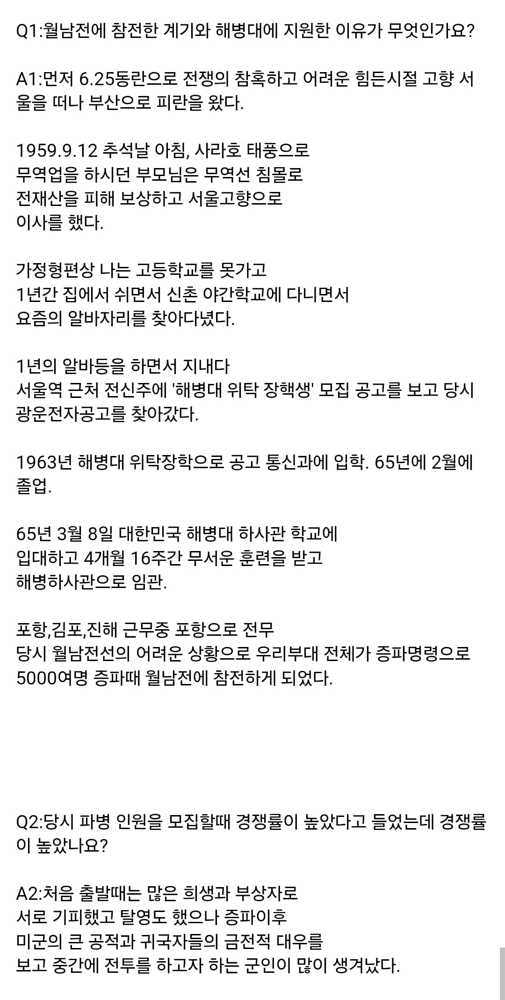
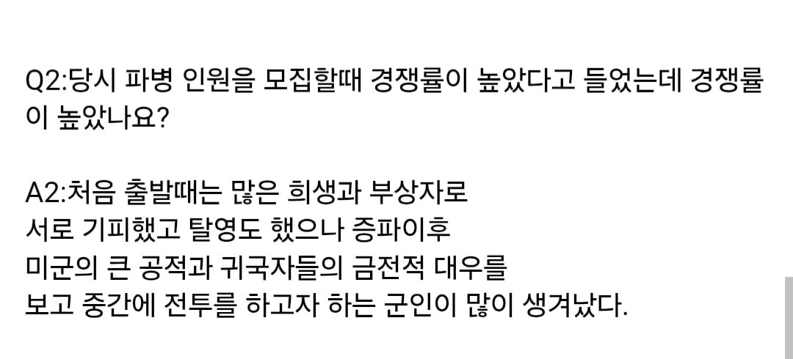
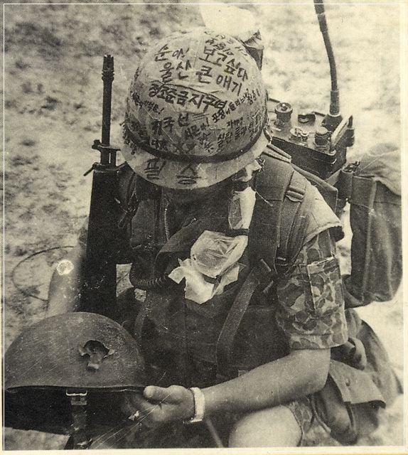

작성자가 직접 참전용사와 직접 인터뷰한 내용인데....
당시 파병 경쟁률이 높았다 하는 이야기를 여쭤봤음.

그러나 파병 초기에는 기피나 탈영까지 했었는데... 귀국자들 대우 보고 지원자가 많아졌다고 함... ㄷㄷ

증언하신 참전용사는 해당 철모 사진으로 유명한 해병대 2여단 통신하사관 '이명수' 중사님이심....

작성자가 직접 참전용사와 직접 인터뷰한 내용인데....
당시 파병 경쟁률이 높았다 하는 이야기를 여쭤봤음.

그러나 파병 초기에는 기피나 탈영까지 했었는데... 귀국자들 대우 보고 지원자가 많아졌다고 함... ㄷㄷ

증언하신 참전용사는 해당 철모 사진으로 유명한 해병대 2여단 통신하사관 '이명수' 중사님이심....
감사합니다...
역시 보상중의 보상은 금전적 보상인기라
보통 50년대 초반생이 월남 마지막 파병세대더만.
북한 러시아파병 군인도 북한에서는 비슷한 취급인가
핵심은 '보상'임 보상을 제대로 해야 인정받는것이고 사람들의 인식과 대우가 달라짐
우리 아버지도 9사로 참전하셨는데, 기지 내부까지 베트콩이 쳐들어와서 전사자가 엄청 많이 나왔다고 하시더라 아버지가 행정병이었기 망정이지 안 그랬으면 당신도 죽었을 거라고 말씀하심
내가 딱 자대 전입했을 때 대대에 1,3,본부중대는 있었는데 2중대는 없었음. 왜 저희 대대는 2중대가 없습니까? 하니까 통채로 이라크갔대.
근데 그 경쟁률이 쎄서 일단 모든 대대 전체에서 자원을 받고 부모님 서명 받아오게 하고 해도 떨어진 사람 많았고, 내 선임도 그런 사람 중 하나였음. 내가 제대할 때 쯤에 파병 복귀했는데 장기 지원한 하사들 그 해외파병 가점 받은 하사 외에는 싹 다 장기 떨어짐.
우리 할아버지는 두 번 다녀오셨는데 (할머니가 농담반 진담반으로 가서 전사해서 연금 나오라고 또 보냈다고 회고하심)
두 번 다 적십자 쪽으로 배정 됐다던가.. 상처나 후유증은 커녕 굉장히 건강하게 지내시다 90세에 노환으로 돌아가셨음
그래서 어린 시절 나는 막연하게 월남 파병이 꿀통이었나보다 했는데 전혀 아닌 거 보고 좀 놀랐음
작은할아버지 월남파병 때 총맞은 자국 자랑하시곤 하셨지 영광의 상처라고 하시며..
이제 한국은 사람 목숨의 무게감이 완전 달라져서 저런 파병은 이제 거의 불가능하겠지ㅋㅋ이번 북괴 우러전 파병이 이거랑 비슷하지않을까 싶다
지원 착출 다 일병에서 상병급이였음
복무기간 1년 이상 남은 장병만 지원가능
남의 나라 전쟁에 끌려가는것 만큼 억울하고 서러울것도 없지
울 아버지가 월남전 말기에 연대 인사과 근무하셨는데, 본문처럼 대우 좋다고 서로 가려고 하다가 말기쯤 되니 전쟁에 이기지도 못하고 사상자 많다고 소문나서 안가려 해서 강제 차출로 바뀌었다고 하더라. 우리 아버지도 인사과라 뽑아서 보내는 입장이라 다행이었지 안 그랬으면 차출될뻔 하셨다고 하심.